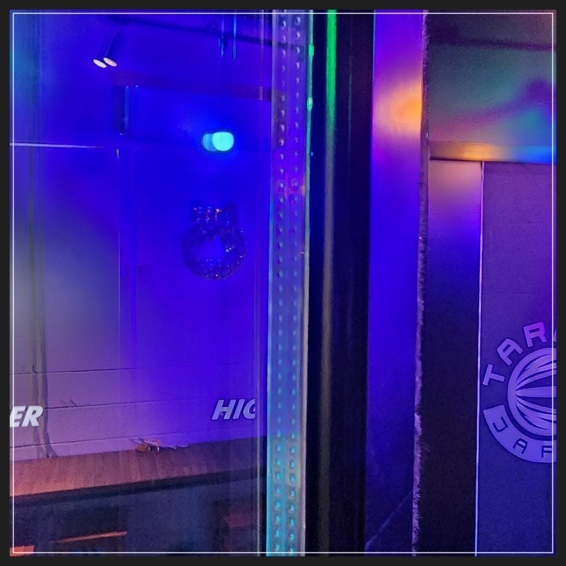
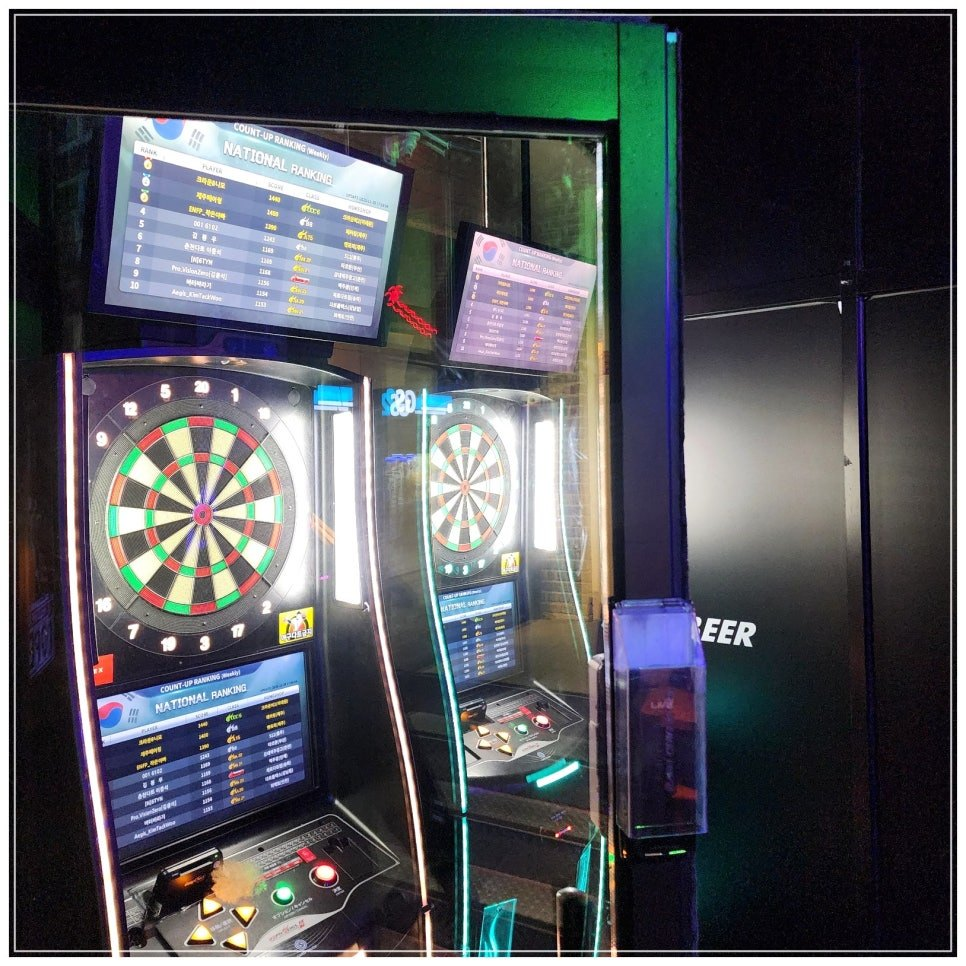

유리문 수리라고 해서 문짝을 통째로 갈아야 하는 건 아닙니다. 관악구의 한 상가 입구문은 부딪힌 일 없이 금이 갔는데, 문틀과 부속이 멀쩡해서 깨진 24T 복층유리 한 장만 새것으로 바꿨습니다.
한눈에 보기
| 작업 | 상가 입구 유리문, 유리만 교체 |
|---|---|
| 지역 | 서울 관악구 |
| 유리 크기 | 가로 800mm × 세로 2400mm |
| 새 유리 | 24T 복층유리(원래 문과 같은 사양) |
| 다시 쓴 부속 | 손잡이, 힌지, 도어클로저 |
| 작업 시간 | 영업을 마친 저녁 |




같은 매장의 작업 전후 모습은 신림동 상가 유리문 교체 사례에도 정리해 두었습니다. 이 글은 수리 방법을 고르는 기준과 새 유리의 구조에 맞춰 다시 정리했습니다.
깨진 유리문, 문짝째 바꿔야 하나요?
판단 기준은 두 가지입니다. 문짝 프레임이 비틀리지 않았는지, 그리고 힌지와 도어클로저가 걸림 없이 움직이는지입니다.
둘 다 괜찮으면 유리 한 장을 갈아 끼우는 것으로 끝납니다. 프레임이 휘었거나 부속이 고장 났다면 문짝까지 새로 짜야 해서 자재도 비용도 늘어납니다.
이 매장은 위쪽 도어클로저와 손잡이, 힌지 모두 쓸 만해서 유리만 바꾸기로 정했습니다.
깨진 유리 교체는 어떤 순서로 하나요?
- 금은 도어클로저 밑에서 '미세요' 표지 부근까지 퍼져 있었고, 매장에서 필름과 테이프로 덮어 둔 상태였습니다.
- 떼는 도중 잔조각이 바닥에 튈 수 있어 손님이 없는 영업 종료 뒤로 시간을 잡았습니다.
- 손잡이·힌지·도어클로저가 상하지 않게 분리한 뒤 금 간 유리를 빼냈습니다.
- 가로 800mm, 세로 2400mm 크기로 맞춘 24T 복층유리를 문짝에 넣었습니다.
- 떼어 둔 부속을 원래 자리에 다시 달아 마무리했습니다. 입구 모습은 깨지기 전과 똑같습니다.
복층유리는 일반 강화유리와 뭐가 다른가요?
24T는 유리 두 장과 그 사이 빈 공간을 모두 더한 두께가 24mm라는 표시입니다.
두 장 사이 테두리에는 작은 구멍이 줄지어 뚫린 금속 띠(간봉)가 들어가고, 그 안의 흡습제가 공기층의 습기를 잡아 줍니다.
원래 문이 복층유리였기 때문에 새 유리도 같은 사양으로 맞췄습니다. 한 장짜리 강화유리보다 자재값은 조금 더 듭니다.
유리문 수리 비용은 어떻게 정해지나요?
청년유리에서 유리만 다시 넣는 유리문 수리는 보통 35만~50만 원 사이입니다.
문 크기, 유리 종류, 작업 시간대, 부속을 다시 쓸 수 있는지에 따라 이 범위 안에서 오르내립니다. 이번처럼 부속을 살리면 부품값이 따로 붙지 않습니다.
관련 블로그 포스팅
자주 묻는 질문
- Q. 부딪힌 적도 없는데 유리문이 왜 깨지나요?
- 충격 없이 생긴 금은 원인을 딱 하나로 꼽기 어렵습니다. 다만 금 간 채로 문을 계속 쓰면 여닫을 때의 흔들림에 조각이 빠질 수 있어 빨리 바꾸시는 게 안전합니다.
- Q. 유리 두께를 몰라도 견적이 되나요?
- 됩니다. 문 전체가 나온 사진과 줄자로 잰 가로·세로만 보내 주시면 사진으로 사양을 보고 안내해 드립니다.